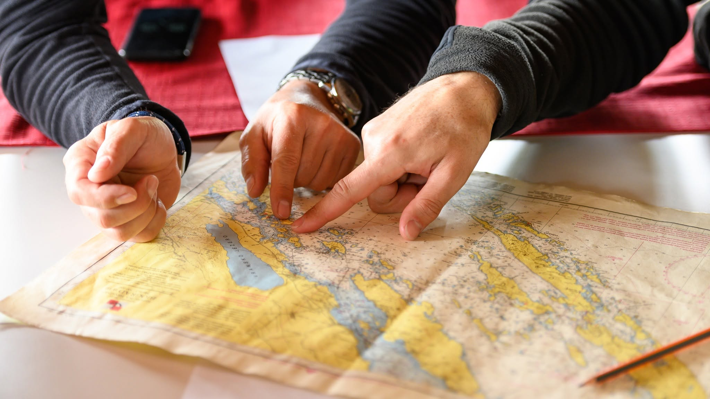
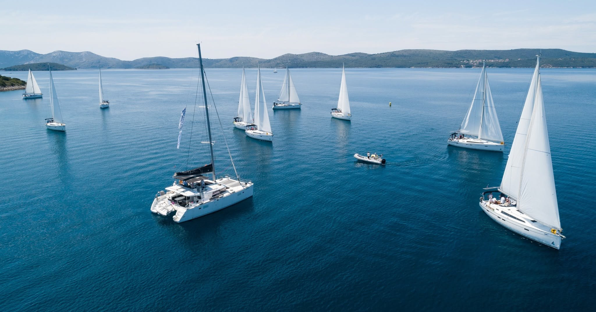
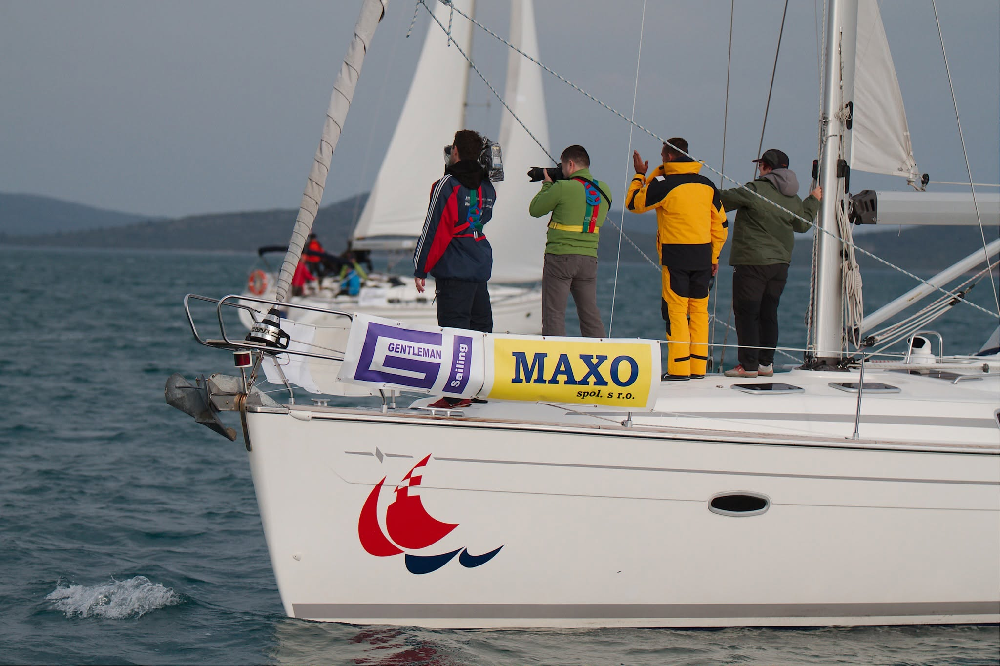
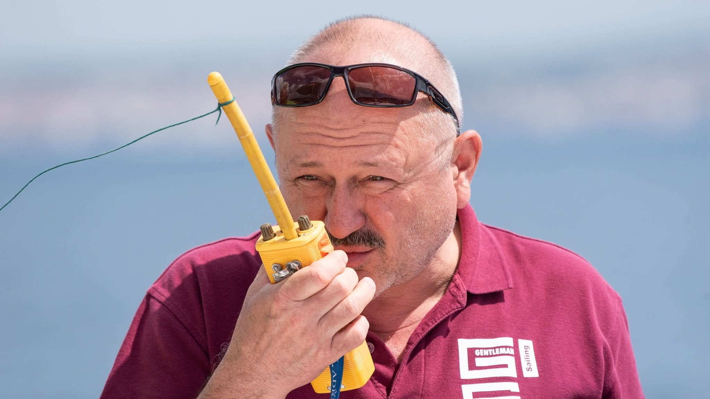
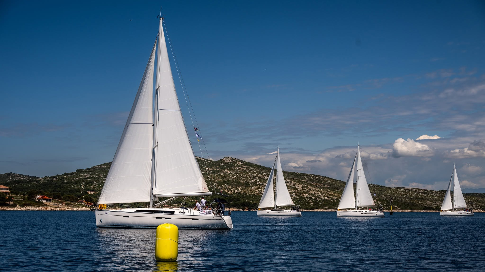
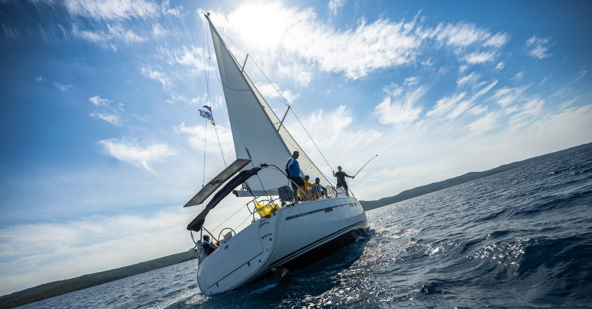
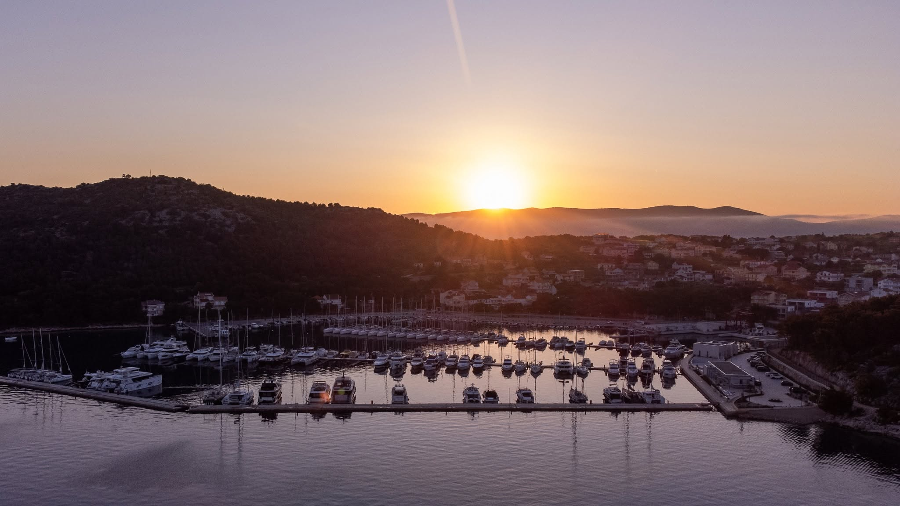
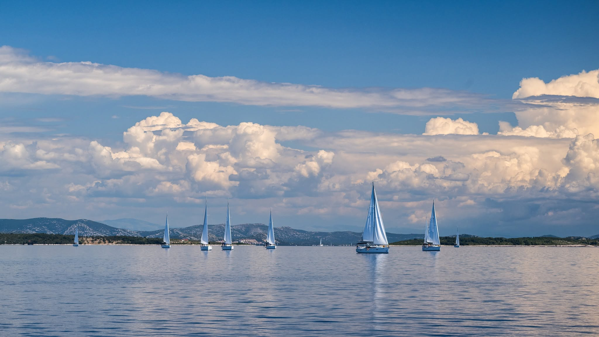

Gentleman Sailing spája šport, dobrodružstvo, more, priateľstvo a noblesu. Na prvý pohľad je to súťaž plachetníc — v skutočnosti je to oveľa viac.
Gentleman Sailing regata je výnimočné jachtársko-spoločenské podujatie, ktoré spája šport, dobrodružstvo, more, priateľstvo a noblesu. Na prvý pohľad je to súťaž plachetníc. V skutočnosti je to však oveľa viac. Je to spôsob plavby, ktorý stojí na hodnotách fair play, rešpektu, férovosti, dôvery a spoločného zážitku.
Gentleman Sailing nie je regata, v ktorej ide iba o to, kto ako prvý prepláva cieľovou čiarou. Je to regata, v ktorej je rovnako dôležité, ako sa k cieľu dostanete. S rešpektom k pravidlám. S úctou k súperom. S ohľaduplnosťou k posádke. S pokorou voči moru. A s vedomím, že skutočné víťazstvo sa nemeria iba časom, ale aj tým, akú atmosféru za sebou zanecháte.
Gentleman Sailing je postavený na myšlienke, že súťažiť sa dá naplno, odvážne a s vášňou, no zároveň čestne, férovo a s noblesou. Práve táto kombinácia robí z regaty zážitok, ktorý si posádky pamätajú ešte dlho po návrate na pevninu.
Hoci názov Gentleman Sailing prirodzene odkazuje na pojem gentleman, táto regata nie je určená iba pre mužov. Naopak. Gentleman Sailing je otvorený mužom aj ženám, skúseným jachtárom aj tým, ktorí si atmosféru regaty chcú zažiť po prvý raz.
V tomto kontexte gentleman neznamená pohlavie. Znamená postoj. Znamená spôsob správania. Znamená úroveň, s akou človek vstupuje do súťaže, do tímu, do komunikácie aj do spoločného priestoru na palube.
Gentlemanská plavba je o tom, že každý člen posádky má svoje miesto. Každý je dôležitý. Každý môže prispieť. Niekto skúsenosťami, niekto odvahou, niekto pokojom, niekto energiou, niekto schopnosťou podržať tím v správnej chvíli.
Na palube nezáleží na tom, či ste muž alebo žena. Záleží na tom, či viete spolupracovať, počúvať, rešpektovať ostatných a byť súčasťou jednej posádky. More veľmi rýchlo ukáže, že dobrý tím nestojí na sile jednotlivca, ale na súhre všetkých.
Gentlemanská plavba je spôsob plavby, ktorý spája športového ducha s ľudskou úrovňou. Je to prístup, pri ktorom sa rešpektuje súper, posádka, pravidlá, organizátor, loď aj samotné more.
Nie je to plavba bez ambície. Práve naopak. Gentleman Sailing je regata, a teda prirodzene prináša napätie, taktiku, súťaživosť a túžbu vyhrať. Rozdiel je v tom, že víťazstvo nemá byť dosiahnuté za každú cenu.
Gentlemanská plavba znamená, že posádka súťaží čestne. Nespolieha sa na nefér výhody, zbytočné konflikty ani pretláčanie ega. Hľadá najlepšiu trasu, pracuje s vetrom, sleduje konkurenciu, robí rozhodnutia v správny čas a využíva schopnosti celého tímu. No zároveň rešpektuje hranice, pravidlá a ducha regaty.
Je to plavba, pri ktorej má význam nielen výkon, ale aj charakter.

Fair play je jednou z najdôležitejších hodnôt Gentleman Sailing regaty. Bez férovosti by regata stratila svoj zmysel. Jachting je šport, v ktorom sa súťaží v neustále sa meniacich podmienkach. Vietor, vlny, rozhodnutia posádky, taktika, skúsenosti aj schopnosť reagovať na situáciu vytvárajú prostredie, kde sa ukáže nielen technická zdatnosť, ale aj charakter.
Fair play znamená rešpektovať pravidlá, aj keď sa nikto nepozerá. Znamená priznať si chybu. Znamená nesnažiť sa získať výhodu spôsobom, ktorý by bol v rozpore s duchom regaty. Znamená vedieť prijať výsledok, pogratulovať súperovi a pokračovať ďalej s úsmevom.
Na mori sa férovosť nedá iba predstierať. Posádky sa stretávajú na vode, v prístavoch, pri spoločných večeroch aj počas vyhodnotenia. Atmosféra celého podujatia stojí na tom, že medzi účastníkmi vzniká dôvera. Súperenie je skutočné, ale nie nepriateľské. Ambícia je prirodzená, ale nemá prekročiť hranicu rešpektu.
Gentleman Sailing preto nie je len o pravidlách napísaných v propozíciách. Je aj o nepísaných pravidlách správania, ktoré robia z regaty kultivované podujatie s vlastným charakterom.
Gentleman Sailing prináša súťaživosť, ktorá k regate prirodzene patrí. Posádky chcú byť rýchle, chcú zvládnuť manévre čo najlepšie, chcú správne čítať vietor a chcú prísť do cieľa s dobrým výsledkom. Práve táto energia dáva regate adrenalín a napätie.
Rozdiel je v tom, že súťaživosť na Gentleman Sailing má priateľskú podobu. Posádky proti sebe nestoja ako nepriatelia. Sú súčasťou jedného podujatia, jednej komunity a jedného spoločného zážitku. Dnes sa predbehnú na vode, večer si spolu sadnú v prístave. Dnes bojujú o sekundy, zajtra si pomôžu s lanom, radou alebo dobrou náladou.
Takáto forma súťaže je pre Gentleman Sailing typická. Neuberá nič z napätia regaty, no dodáva jej ľudskosť. Víťazstvo chutí lepšie, keď prichádza v atmosfére rešpektu. A aj prehra sa prijíma ľahšie, keď je súčasťou férovej hry.
Noblesa je slovo, ktoré ku Gentleman Sailing prirodzene patrí. Neznamená okázalosť ani formálnosť. Znamená úroveň. V správaní, v komunikácii, v súťaži aj v spoločných chvíľach mimo vody.
Noblesa na vode znamená rešpektovať posádku, kapitána, ostatné lode aj pravidlá bezpečnosti. Znamená nepodceňovať more, nepodceňovať vietor a nepodceňovať zodpovednosť, ktorú má každý člen posádky. Znamená správať sa tak, aby sa ostatní na palube cítili bezpečne, prijato a súčasťou tímu.
Noblesa na pevnine znamená vedieť sa tešiť z výsledku bez povýšenosti. Vedieť prijať neúspech bez výhovoriek. Vedieť oceniť organizátorov, súperov, posádku aj ľudí, ktorí sa o podujatie starajú. Znamená priniesť so sebou dobrú atmosféru a prispieť k tomu, aby regata bola zážitkom pre všetkých.
Gentleman Sailing tak prirodzene prepája šport s kultúrou správania. Je to regata, kde sa súťaží, ale aj stretáva. Kde sa merajú sily, ale aj budujú vzťahy. Kde vietor v plachtách prináša adrenalín a spoločné večery prinášajú priateľstvá.

More má zvláštnu schopnosť zbližovať ľudí. Na palube sa nedá zostať úplne bokom. Každý je súčasťou posádky, každý reaguje na rovnaký vietor, každého ovplyvní rovnaká vlna a každý smeruje k rovnakému cieľu.
Práve preto je Gentleman Sailing viac než športové podujatie. Je to skúsenosť, ktorá prirodzene vytvára vzťahy. Na mori sa rozhovory vedú inak ako v kancelárii, v konferenčnej miestnosti alebo pri formálnom stole. Ľudia sa spoznávajú cez spoločný zážitok, cez rozhodnutia, cez humor, cez napätie aj cez okamihy ticha, keď loď ide pod plachtami a všetko ostatné na chvíľu stíchne.
More odstraňuje zbytočné bariéry. Na palube nie je dôležité, kto má akú pracovnú pozíciu, titul alebo funkciu. Dôležité je, kto práve drží kormidlo, kto pomáha s lanom, kto sleduje vietor, kto podporí ostatných a kto vie v správnej chvíli zachovať pokoj.
Aj preto je Gentleman Sailing silným zážitkom pre firmy, klientov, obchodných partnerov aj interné tímy. More vytvára prostredie, v ktorom sa prirodzene ukáže spolupráca, dôvera, rešpekt a schopnosť byť súčasťou jedného celku.
Na plachetnici nefunguje individualizmus bez ohľadu na ostatných. Každý člen posádky má svoju úlohu a každý pohyb má vplyv na celok. Ak jeden človek nereaguje, ovplyvní to ostatných. Ak posádka komunikuje jasne, loď ide lepšie. Ak si ľudia dôverujú, manévre sú plynulejšie. Ak sa tím podporuje, zvládne aj náročnejšie chvíle.
Gentleman Sailing preto prirodzene ukazuje, čo znamená byť tímom. Nie v teórii, nie na workshope, nie cez prezentáciu. Ale priamo v praxi.
Posádka musí spolupracovať. Musí sa počúvať. Musí rešpektovať kapitána. Musí reagovať na meniace sa podmienky. Musí prijímať rozhodnutia. Musí zvládnuť tlak. Musí si pomáhať. A keď sa podarí dobrý manéver, dobrý štart alebo dobrý výsledok, radosť patrí všetkým.
To je sila regaty. Ukazuje, že tím nie je skupina ľudí na jednom mieste. Tím je skupina ľudí, ktorí dokážu ťahať jedným smerom.

Gentleman Sailing má za sebou dlhoročnú tradíciu a mnoho posádok, lodí, firiem, moreplavcov, prístavov, trás, zážitkov a priateľstiev. Práve tradícia dáva regate váhu a charakter. Každý ročník prináša nové príbehy, no zároveň nadväzuje na atmosféru, ktorá sa budovala roky.
Táto kontinuita je dôležitá. Gentleman Sailing nie je jednorazové podujatie bez duše. Je to regata, ktorá má svoju históriu, svojich priaznivcov, svoje rituály a svoj osobitý spôsob, ako spájať ľudí na vode aj mimo nej.
Tradícia však neznamená uzavretosť. Naopak. Každý nový ročník prináša možnosť pridať sa. Vytvoriť vlastnú posádku, prihlásiť firmu, pozvať klientov, prísť s kolegami alebo sa jednoducho stať súčasťou komunity ľudí, ktorí rozumejú tomu, že plavba pod plachtami je viac než len presun z jedného miesta na druhé.
Gentleman Sailing je určený pre všetkých, ktorí chcú zažiť regatu s atmosférou, úrovňou a priateľským duchom. Je vhodný pre skúsených jachtárov, ktorí si chcú užiť súťaž, aj pre účastníkov, ktorí prichádzajú za zážitkom, spoločnosťou a atmosférou mora.
Je vhodný pre mužov aj ženy. Pre firmy aj jednotlivcov. Pre obchodných partnerov aj interné tímy. Pre ľudí, ktorí milujú jachting, aj pre tých, ktorí sa s ním ešte len zoznamujú.
Dôležité nie je, či ste už niekedy stáli pri kormidle. Dôležité je, či ste pripravení byť súčasťou posádky. Či viete rešpektovať pravidlá, spolupracovať, priložiť ruku k dielu a užiť si plavbu v duchu fair play.
Gentleman Sailing oslovuje ľudí, ktorí nehľadajú len program, ale zážitok. Nie iba súťaž, ale atmosféru. Nie iba cestu po mori, ale príbeh, ktorý budú rozprávať ešte dlho po návrate.
Slovo gentleman v názve Gentleman Sailing vyjadruje hodnoty, ktoré sú pre túto regatu podstatné. Nejde o formálny titul ani o uzavretý klub. Ide o spôsob správania.
Gentleman je človek, ktorý vie súťažiť bez arogancie. Vie vyhrať bez povýšenosti. Vie prehrať bez zatrpknutosti. Vie rešpektovať pravidlá, oceniť súpera a podržať vlastnú posádku. Vie, že sila nie je v hlučnosti, ale v charaktere. Vie, že férovosť nie je slabosť, ale základ skutočnej úrovne.
V prostredí regaty sa tieto hodnoty prejavujú veľmi prirodzene. V tom, ako sa posádka správa pri štarte. Ako reaguje v náročnej situácii. Ako komunikuje s ostatnými loďami. Ako prijíma výsledky. Ako sa správa v prístave. Ako pristupuje k organizátorom, kapitánom, súperom aj hosťom.
Gentleman Sailing tak nie je len názov. Je to filozofia podujatia.

Každá regata potrebuje pravidlá. Bez nich by súťaž nebola férová, bezpečná ani zmysluplná. V jachtingu majú pravidlá osobitý význam, pretože lode sa pohybujú v priestore, ktorý sa neustále mení. Vietor, vlny, rýchlosť, smer plavby a rozhodnutia posádok vytvárajú situácie, v ktorých je rešpektovanie pravidiel kľúčové.
Na Gentleman Sailing má bezpečnosť a zodpovednosť svoje pevné miesto. Rešpekt ku kapitánovi, pokynom posádky, pravidlám regaty a podmienkam na mori nie je formalita. Je to základ toho, aby si všetci mohli podujatie užiť naplno.
Gentlemanská plavba znamená vedieť, že more je krásne, ale vyžaduje pokoru. Znamená nepodceňovať počasie, nepreceňovať vlastné schopnosti a rešpektovať rozhodnutia, ktoré chránia posádku aj loď.
Práve zodpovednosť robí z regaty bezpečný a hodnotný zážitok. Adrenalín má svoje miesto, ale nikdy nie na úkor rozumu, rešpektu a bezpečnosti.

Sú veci, ktoré sa nedajú vytvoriť umelo. Atmosféra pri rannom vyplávaní. Napätie pred štartom. Vietor, ktorý napne plachty. Radosť po vydarenom manévri. Ticho počas plavby. Smiech v prístave. Spoločná večera po dni na vode. Pocit, že ste boli súčasťou niečoho výnimočného.
Gentleman Sailing vytvára práve takéto momenty. Nie je to iba program v harmonograme. Je to séria zážitkov, ktoré vznikajú prirodzene. Vďaka moru, ľuďom, súťaži, prostrediu a spoločnej energii.
Pre firmy je to príležitosť, ako priniesť klientom alebo zamestnancom zážitok, ktorý má emóciu. Pre jednotlivcov je to možnosť stať sa súčasťou posádky, spoznať nových ľudí a zažiť jachting v jeho najkrajšej podobe.
Gentleman Sailing nie je udalosť, ktorú iba absolvujete. Je to udalosť, ktorú prežijete.
Gentleman Sailing má prirodzene silný firemný rozmer. Mnohé firmy hľadajú spôsob, ako sa odlíšiť, ako ponúknuť klientom výnimočný zážitok alebo ako posilniť vlastný tím. Regata na mori na to vytvára ideálne prostredie.
Na rozdiel od klasického firemného eventu prináša Gentleman Sailing skutočnú spoločnú skúsenosť. Klienti, partneri alebo zamestnanci nie sú iba divákmi programu. Sú jeho súčasťou. Nastupujú na palubu, stávajú sa posádkou, prežívajú deň na vode, súťažia, spolupracujú a zdieľajú zážitky.
Takéto momenty vytvárajú vzťahy prirodzenejšie ako formálne stretnutia. Na mori sa rozhovory otvárajú ľahšie. Spoločný zážitok odbúrava odstup. Atmosféra regaty dáva priestoru networking, ale bez strojenosti. Vzniká prostredie, v ktorom sa ľudia spoznávajú cez zážitok, nie iba cez vizitky.
Pre firmy je Gentleman Sailing reprezentatívnym, no zároveň ľudským formátom podujatia. Spája noblesu jachtingu, energiu súťaže a silu spoločného zážitku.
Gentleman Sailing je mimoriadne vhodný aj ako teambuilding. Nie preto, že by ponúkal oddych pri mori, hoci aj ten k nemu patrí. Je vhodný najmä preto, že tímová spolupráca je na plachetnici skutočná a nevyhnutná.
Na lodi nie je tímová práca iba heslo. Je to každodenná realita. Posádka musí zvládnuť komunikáciu, rozdelenie úloh, rýchle rozhodnutia, koordináciu aj dôveru. Každý člen tímu vidí, že jeho prístup ovplyvňuje ostatných. Každý má šancu prispieť k spoločnému výsledku.
Takýto teambuilding má silný efekt, pretože nevzniká v umelo vytvorenej hre, ale v reálnom prostredí. More, vietor a loď vytvoria situácie, ktoré prirodzene ukážu, ako tím funguje. Kto dokáže viesť. Kto vie podporiť. Kto zostáva pokojný. Kto pomáha. Kto počúva. Kto povzbudí.
A práve vďaka tomu si tím z Gentleman Sailing neodnáša iba pekné fotografie, ale aj skúsenosť, ktorá môže zlepšiť spoluprácu po návrate do pracovného života.
Gentleman Sailing dokáže byť rôznymi vecami pre rôznych účastníkov. Pre klientov môže byť nezabudnuteľným eventom. Pre obchodných partnerov výnimočným pozvaním do neformálneho, no reprezentatívneho prostredia. Pre zamestnancov odmenou, motiváciou a príležitosťou zažiť kolegov inak. Pre vedenie firmy možnosťou budovať kultúru, vzťahy a dôveru.
Práve univerzálnosť robí z regaty silný formát. Nie je to pasívny program, ktorý účastníci iba sledujú. Je to aktívny zážitok, do ktorého vstupujú. Každý si z neho odnáša niečo vlastné — adrenalín, pokoj, nové kontakty, priateľstvá, hrdosť na tím, radosť z mora alebo jednoducho pocit, že zažil niečo výnimočné.

Duch Gentleman Sailing sa nedá zhrnúť iba do výsledkovej listiny. Je v rannom pohybe v maríne. V príprave lodí. V očakávaní pred štartom. V pohľade na plachty ostatných posádok. V rozhodnutiach kapitánov. V práci posádky. V napätí počas pretekov. V radosti v cieli. V potlesku pri vyhodnotení. V rozhovoroch po regate. V zážitkoch, ktoré sa opakujú pri každom ďalšom stretnutí.
Je to duch súťaže bez nepriateľstva. Ambície bez arogancie. Dobrodružstva bez chaosu. Noblesy bez odstupu. Priateľstva bez hrania sa na niečo, čím nie sme.
Gentleman Sailing je regata pre ľudí, ktorí chcú zažiť more so štýlom, súťaž s rešpektom a spoločnosť s úrovňou.

Z Gentleman Sailing si neodnesiete iba výsledok. Odnesiete si skúsenosť, ktorú je ťažké nahradiť iným typom podujatia.
Odnesiete si pocit z plavby pod napnutými plachtami. Spomienku na spoločný štart. Radosť z dobre zvládnutého manévru. Úsmev po dni na vode. Nové kontakty. Silnejšie vzťahy. Príbehy, ku ktorým sa budete vracať. A možno aj chuť vrátiť sa na regatu opäť.
Gentleman Sailing je o momentoch, ktoré vznikajú medzi ľuďmi. More je ich kulisou, vietor ich poháňa a regata im dáva smer.
Gentleman Sailing regata je súťažná, no priateľská plavba na mori, ktorá spája mužov aj ženy, firmy aj jednotlivcov, športový výkon aj noblesu, fair play aj dobrodružstvo a mení posádky na tímy.

Vstúpte do sveta Gentleman Sailing a zažite regatu, v ktorej sa súťaží naplno, no s rešpektom. Regatu, v ktorej má každý člen posádky svoje miesto. Regatu, kde sa more, vietor, tím a noblesa spájajú do jedného nezabudnuteľného zážitku.
Či prichádzate ako firma, posádka, jednotlivec, klient, partner alebo člen tímu, Gentleman Sailing vám ukáže, že skutočná plavba sa nezačína až na mori. Začína sa rozhodnutím vyplávať.
PrihláškaGentleman Sailing — regata, kde fair play drží kurz a vietor nesie zážitky.